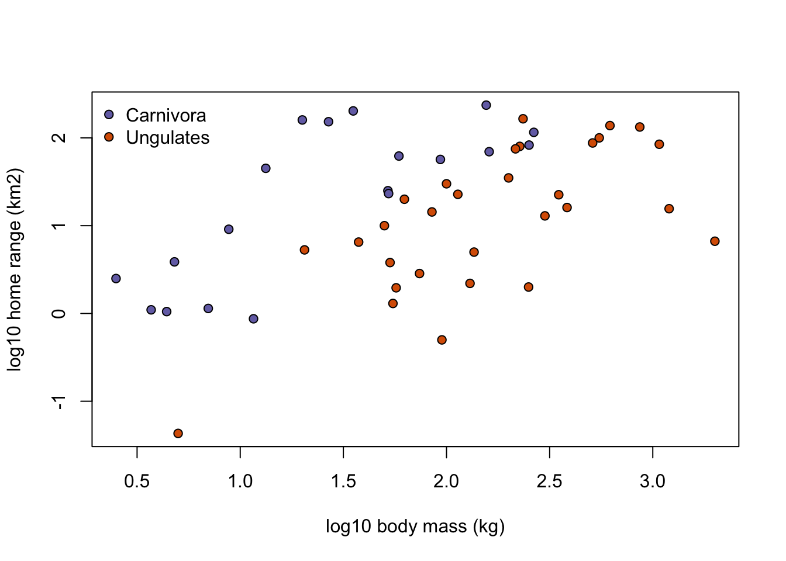
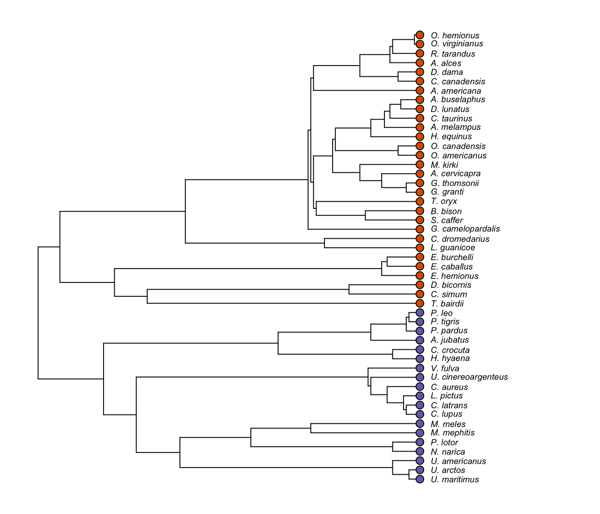
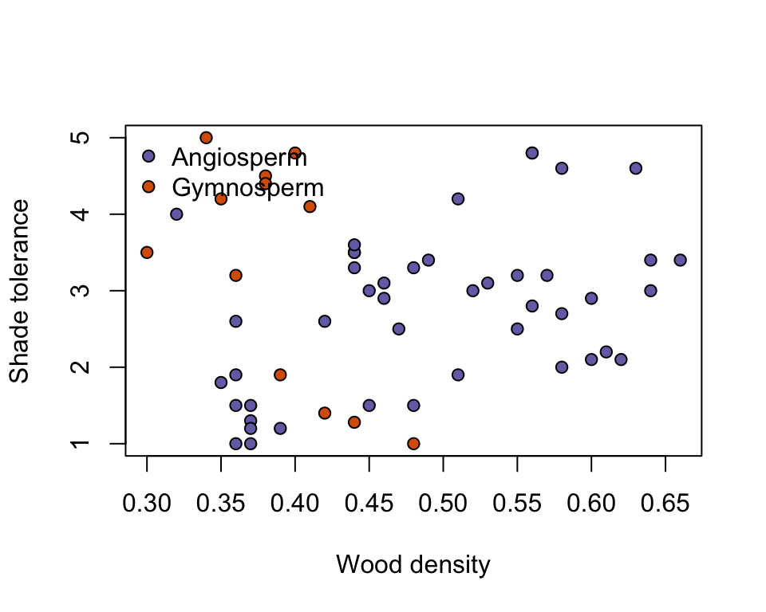

4 Why it matters: real examples
Before going into the theory of PGLS, let’s look at two real datasets where ignoring the phylogeny leads to a different biological conclusion. In the first one, a conventional analysis finds a strongly significant difference that disappears, or becomes much weaker, once the phylogeny is considered. In the second one, the opposite happens: the phylogeny was hiding a relationship.
4.1 Do carnivores have larger home ranges than ungulates?
This is one of the classic examples of the comparative method (Garland et al. 1993). The dataset contains body mass (kg) and home range area (km2) for 49 mammal species: 19 Carnivora and 30 ungulates. It is the dataset of Garland et al. (1992), and it is also distributed in the R package phytools (data(mammal.data) and data(mammal.tree)).
# load required libraries
library(nlme)
library(ape)
# Load data
mammals <- read.csv("./data/mammal_homerange.csv")
mammaltree <- read.tree("./data/mammal_homerange.tre")
# Transform clade to factor for analysis
mammals$clade <- factor(mammals$clade)
# Compute log10 values for analysis
mammals$logMass <- log10(mammals$bodyMass_kg)
mammals$logHR <- log10(mammals$homeRange_km2)
# Add rownames and order table following the tip labels of the tree
rownames(mammals) <- mammals$species
mammals <- mammals[mammaltree$tip.label, ]The question is simple: for a given body size, do carnivores, which eat prey at low densities, need larger home ranges than herbivores?
cols <- c("#7570b3","#d95f02")
plot(logHR ~ logMass, data = mammals, pch = 21, bg = cols[mammals$clade],
xlab = "log10 body mass (kg)", ylab = "log10 home range (km2)")
legend("topleft", legend = levels(mammals$clade), pt.bg = cols, pch = 21, bty = "n")
Before going further: how would you analyse these data? What would you conclude?
A standard analysis of covariance (ANCOVA) gives a very clear answer:
## Value Std.Error t-value p-value
## (Intercept) -0.1055 0.2466 -0.4278 0.6708
## logMass 0.9970 0.1448 6.8851 0.0000
## cladeUngulates -1.0224 0.2088 -4.8959 0.0000Ungulates have home ranges about 10 times smaller (-1.02 on the log10 scale) than carnivores of the same size, and the difference is highly significant. Now let’s look at where the species are on the phylogeny.
op <- par(mar = c(1,1,1,1))
plot(mammaltree, cex = 0.6, label.offset = 2)
tiplabels(pch = 21, bg = cols[mammals$clade], cex = 1.2)
All the carnivores form a single clade, and so do all the ungulates. Whatever made carnivores and ungulates different could have happened only once, on the branches separating the two clades. From an evolutionary point of view, there is only one comparison here, even if there are 49 species. Let’s fit the same model while accounting for the phylogeny.
hr.bm <- gls(logHR ~ logMass + clade, data = mammals,
correlation = corBrownian(phy = mammaltree, form = ~species))
round(summary(hr.bm)$tTable, 4)## Value Std.Error t-value p-value
## (Intercept) -0.6275 0.7959 -0.7884 0.4345
## logMass 1.3171 0.1777 7.4097 0.0000
## cladeUngulates -1.6055 1.0303 -1.5583 0.1260hr.lambda <- gls(logHR ~ logMass + clade, data = mammals,
correlation = corPagel(0.5, phy = mammaltree, form = ~species))
round(summary(hr.lambda)$tTable, 4)## Value Std.Error t-value p-value
## (Intercept) -0.5595 0.5193 -1.0773 0.2870
## logMass 1.2757 0.1670 7.6376 0.0000
## cladeUngulates -1.5397 0.6485 -2.3741 0.0218## lambda
## 0.8163428Under Brownian motion, the clade difference is no longer significant. Its standard error is about five times larger than in the OLS model, because the model knows that the 49 species are not 49 independent observations of the effect of diet. With Pagel’s \(\lambda\), the result lies somewhere in between. Garland et al. (1993) reached the same conclusion with three different phylogenetic approaches: carnivores did not have significantly larger home ranges than ungulates in this sample.
There is a second, less obvious problem. Look at the allometric slope when the clade is not included in the model:
## Value Std.Error t-value p-value
## (Intercept) 0.0109 0.2994 0.0363 0.9712
## logMass 0.6071 0.1476 4.1141 0.0002round(summary(gls(logHR ~ logMass, data = mammals,
correlation = corBrownian(phy = mammaltree, form = ~species)))$tTable, 4)## Value Std.Error t-value p-value
## (Intercept) -1.4238 0.6194 -2.2989 0.026
## logMass 1.2616 0.1768 7.1368 0.000The OLS slope is about half the PGLS slope. Carnivores are, on average, smaller than ungulates but have larger home ranges. When the two clades are pooled, this single deep difference flattens the slope, a phylogenetic version of Simpson’s paradox. The phylogenetic slope is close to the slopes within each clade.
Take-home messages: (1) a significant result with many species can rest on a single evolutionary event; (2) the phylogeny affects not only \(p\)-values but also parameter estimates; (3) even with PGLS, a difference between two clades remains a comparison with one evolutionary replicate (see chapter 12).
4.2 Back to the Quebec trees: what was hiding the relationship?
In chapter 6, we will see that the relationship between shade tolerance and wood density is not significant with OLS but becomes significant with PGLS. Why? The tree contains 12 gymnosperms that have, on average, lighter wood but greater shade tolerance than angiosperms.
seedplantstree <- read.nexus("./data/seedplants.tre")
seedplantsdata <- na.omit(read.csv2("./data/seedplants.csv"))
seedplantstree <- drop.tip(seedplantstree,
seedplantstree$tip.label[!(seedplantstree$tip.label %in% seedplantsdata$Code)])
rownames(seedplantsdata) <- seedplantsdata$Code
seedplantsdata <- seedplantsdata[seedplantstree$tip.label, ]
gymnosperms <- c("ABBA","JUVI","LALA","PIAB","PIBA","PIGL","PIMA",
"PIRE","PIRU","PIST","THOC","TSCA")
seedplantsdata$Clade <- factor(ifelse(seedplantsdata$Code %in% gymnosperms,
"Gymnosperm","Angiosperm"))
tapply(seedplantsdata$Wd, seedplantsdata$Clade, mean)## Angiosperm Gymnosperm
## 0.4902222 0.3875000## Angiosperm Gymnosperm
## 2.737778 3.273333plot(Shade ~ Wd, data = seedplantsdata, pch = 21, bg = cols[seedplantsdata$Clade],
xlab = "Wood density", ylab = "Shade tolerance")
legend("topleft", legend = levels(seedplantsdata$Clade), pt.bg = cols, pch = 21, bty = "n")
## Estimate Std. Error t value Pr(>|t|)
## (Intercept) 2.001 0.7501 2.6677 0.0100
## Wd 1.813 1.5676 1.1565 0.2525# OLS, but accounting only for the deepest split of the tree
round(summary(lm(Shade ~ Wd + Clade, data = seedplantsdata))$coef, 4)## Estimate Std. Error t value Pr(>|t|)
## (Intercept) 1.0562 0.8396 1.2580 0.2138
## Wd 3.4302 1.6793 2.0427 0.0460
## CladeGymnosperm 0.8879 0.3988 2.2265 0.0302# PGLS
round(summary(gls(Shade ~ Wd, data = seedplantsdata,
correlation = corBrownian(phy = seedplantstree, form = ~Code)))$tTable, 4)## Value Std.Error t-value p-value
## (Intercept) 0.9114 4.4091 0.2067 0.8370
## Wd 4.3610 1.6933 2.5754 0.0127Simply adding the gymnosperm/angiosperm split to the OLS model brings the slope close to the PGLS estimate. In this dataset, most of what PGLS does is to stop the single gymnosperm–angiosperm divergence from dominating the regression. PGLS does this automatically, and for every node of the tree, not just the deepest one.
4.3 Challenge: how often does OLS lie?
Each participant runs the code below with a different seed (e.g., your birth day and month). It simulates two traits that evolve independently by Brownian motion on the Quebec tree phylogeny, then tests the relationship between them with OLS and PGLS.
library(phytools)
set.seed(1503) # change this!
pvalues <- t(replicate(20, {
x <- fastBM(seedplantstree)
y <- fastBM(seedplantstree)
dat <- data.frame(x, y, sp = names(x))
c(OLS = summary(lm(y ~ x))$coef[2, 4],
PGLS = summary(gls(y ~ x, data = dat,
correlation = corBrownian(phy = seedplantstree, form = ~sp)))$tTable[2, 4])
}))
colSums(pvalues < 0.05)How many of your 20 tests were significant with each method? Report your two numbers to the class. Since the traits are independent, we expect about 1 significant test in 20 (5%).
With 500 simulations on this tree, OLS was significant in about 58% of the cases, against about 4% for PGLS.